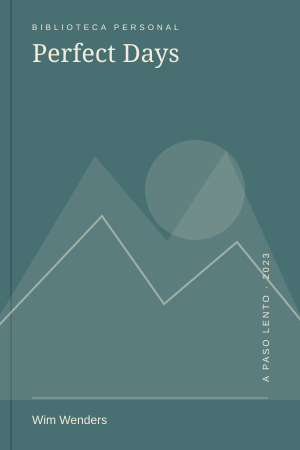
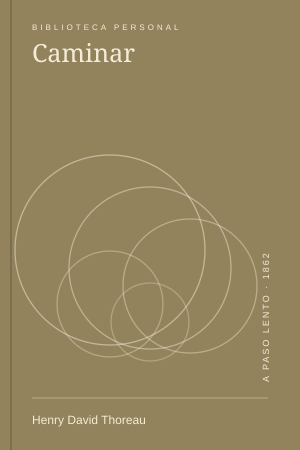

const cuaderno = {
ritmo: "propio",
curiosidad: true
};
ritmo: "propio",
curiosidad: true
};
Una web que pesa menos que una foto
Archivos simples, enlaces que funcionan y una pequeña reivindicación de la web personal.
Las escenas de un mes, vistas juntas.
Archivos simples, enlaces que funcionan y una pequeña reivindicación de la web personal.

CineUna película que no confunde una vida pequeña con una vida vacía.

LecturasUna invitación a salir que encontré, paradójicamente, sentado en una silla.

Una salida imaginaria hacia Laguna de los Tres, con mucho viento y ninguna urgencia.
 Series
SeriesLa amistad, el paisaje y esas búsquedas que terminan hablando de otra cosa.

Cruzar cerca para mirar distinto: una tarde sin itinerario en la Ciudad Vieja.
El aire de la mañana y una ruta conocida que nunca es exactamente la misma.